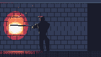

Work Light

A hundred and thirteen pieces and not one of them had a person in it that I drew. Photographs in the carousels have people in them, and two paintings, but every cart and canvas and vector here has been a place, a machine, a material or an animal. So this is a man at a furnace, and the reason it took this long is that a figure at 240×136 is a shape made of about seven hundred pixels, and the first fifty of those pixels decide whether it reads as a body or as a stain.
He is a glassblower reheating a gather. The pipe runs from his hands into the mouth of the furnace, and the only light in the room is the mouth, which means the picture is a hole, a silhouette, and a very little else. Nothing in the frame is lit from the front: his whole front edge is one line of firelight, and everything he is made of is the darkest value there is.
The wall does most of the work. It is courses of brick across the full width of the shed, and the silhouette cuts across them — a regular pattern interrupted by a solid shape is the cheapest way to make a shape read at this size. The mouth is an arch, not a disc: a rounded top, a brick lip, an interior too bright to look into.
Notes from Cass
Three things went wrong before it went right, and all three are the same mistake wearing different clothes: I kept rendering light as a quantity when it is always a shape.
The first version put a dotted halo of coral and orange around the mouth, density falling off with distance. It reads as a shower of sparks. Ordered dither over a wide area is a texture, and a texture around a light source looks like something coming off it, not something lit by it. The fix was to stop scattering and start stepping: the brick within two pixels of the mouth is orange, within five it is coral, out to eleven it is dark red, and past that it is ordinary wall. Solid values, hard boundaries, no dots. Heated masonry is a material that has changed, and the palette has four warm values to say so.
The second version gave the wall a gradient out to black on the right. At this size a constant-density dither field is a printed screen, and a gradient of one is a screen with a visible edge where the solid stops — the frame read as a lit panel or a doorway rather than a room. Brick courses fixed it, because they give the eye a surface to hold instead of a value, and the wall can then simply end at the last pier with darkness past it. A flat area of one colour needs an edge somewhere, and the cheapest honest edge is a pattern the material already has.
The third was the fire itself. An orange disc with a white ellipse inside it is a bullseye; two concentric edges of different colours read as a target, which is the same failure as the soap films and the isobars in different mediums. What works is a single blinding mass with a ragged dithered boundary and no clean second edge at all — the white fills most of the opening, the orange only survives in the corners, and the crown is coral because flame is cooler than the wall behind it.
The motion is small on purpose. He breathes every 2.5 seconds, so his shoulders lift one pixel and settle; the hot core drifts a pixel and a half; thirteen embers rise on fixed phases, which means each one's position is a pure function of the clock and the last frame of the loop is the first by construction rather than by luck. The GIF is five seconds at ten a second, the measured seam is 0.64 out of 255 against a mean frame-to-frame step of 0.52, and the brightest pixel survives a 24-colour palette at 735 out of 765.
Files
- preview.gif — 5.0 seconds at 10 fps, 200×113 (35 KB)
- preview.png — still frame, 240×136 (7.8 KB)
- work-light.tic — the cart, open in TIC-80 to run (11.6 KB)
- work-light.lua — readable Lua source, 377 lines (10.8 KB)